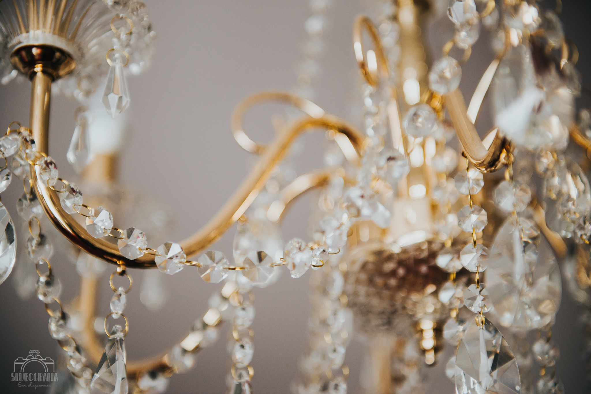
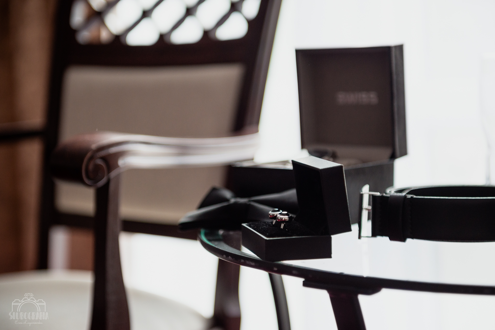
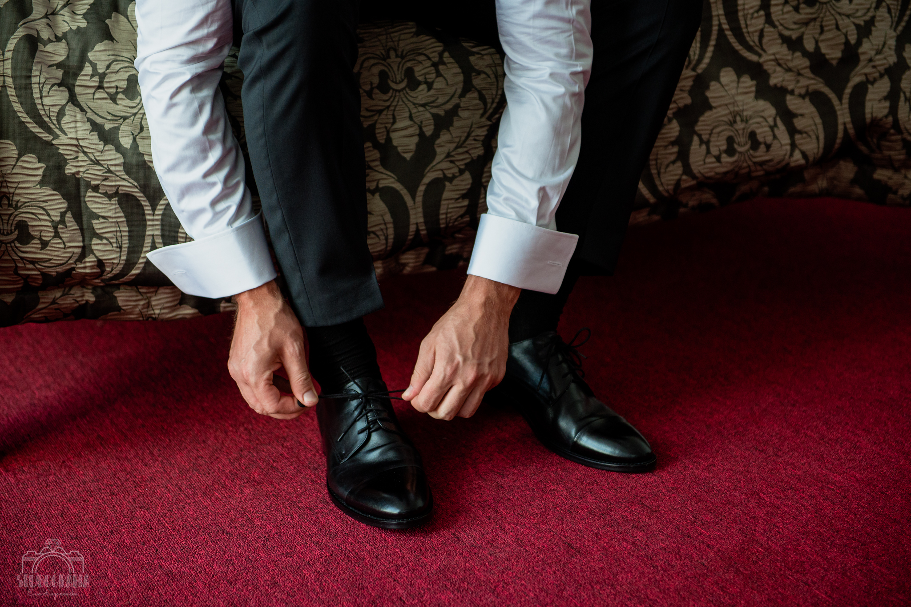
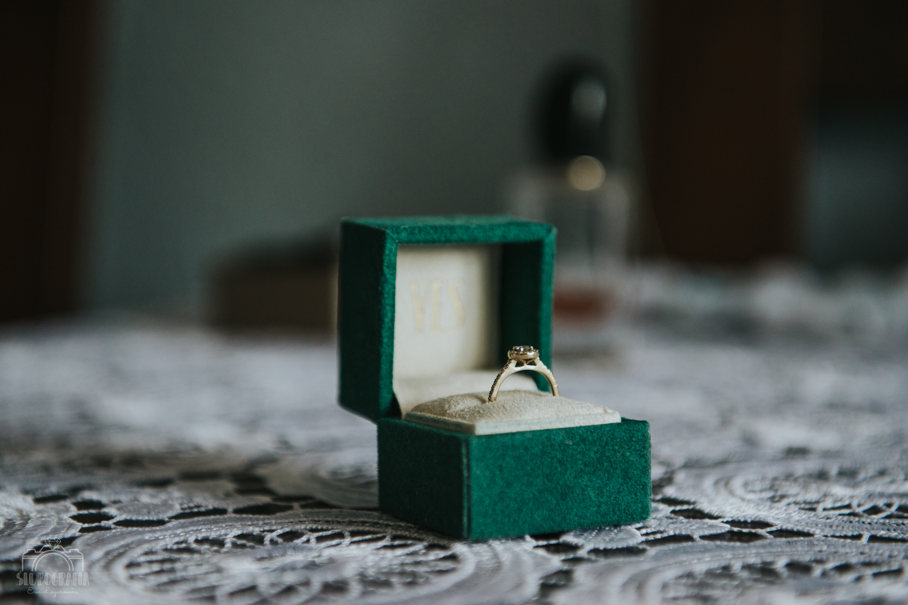
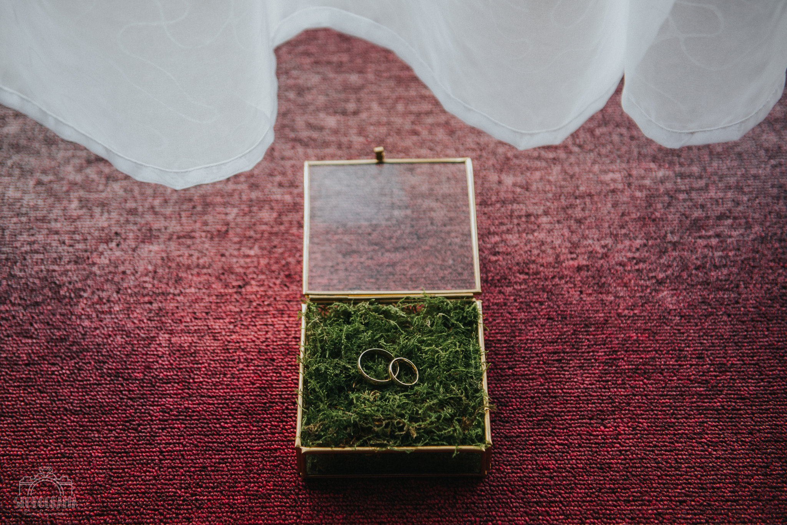

MOJE PRACE
Kilka moich przykładowych realizacji.
Kliknij na zdjęcie, aby powiększyć.







Gdy pasja staje się pracą...
Autostopowiczka kochająca naturę i zapach lasu po deszczu, fanka cięższych brzmień oraz klimatycznego bluesa, z wykształcenia technik dentystyczny, z powołania Wiking w drużynie rekonstrukcji historycznej, z pasji - fotograf. :)
Kilka moich przykładowych realizacji.
Kliknij na zdjęcie, aby powiększyć.
Spotkajcie się ze mną przy kawie lub zostawcie wiadomość: